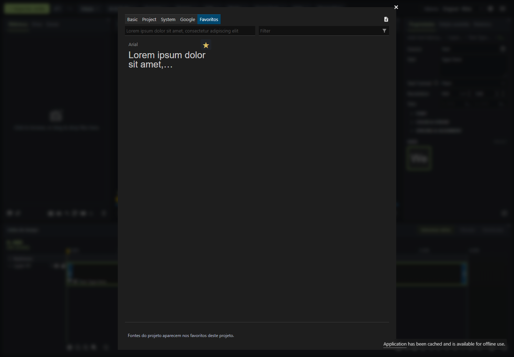
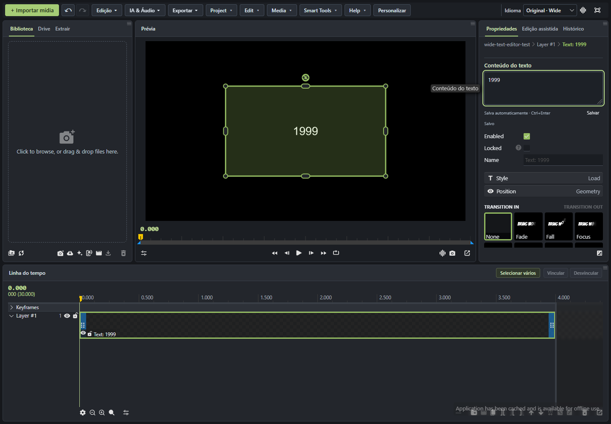
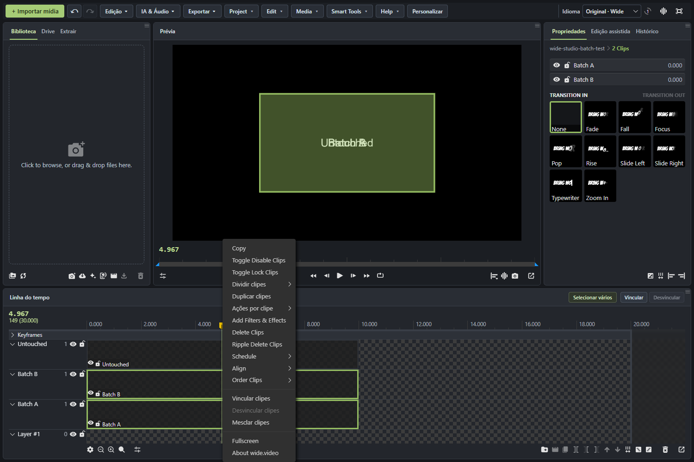

Release validation · November 25, 2026 · Maintained editor target: Wide 1.8.0.
Tests use synthetic projects in an isolated Chrome for Testing browser on Windows. Edge and Opera were not independently tested for this release.
| Check | Coverage |
|---|---|
| Automated regression suite | All checks in npm test, including native command safety, project isolation, linked edits, text rendering, history input barriers and font favorite persistence. |
| UI suite | npm run test:ui: controls, assistant transport, Drive previews/import guards and extraction UI. |
| Favorite fonts | Local and Google fonts; star without applying/closing; native font application; filtering; Portuguese labels; reopening; removal and empty state. Automated fixtures verify project-file scope, persisted reload and scheduler cleanup. |
| Text preview latency | The preview canvas pixels change while typing, before saving. One saved version per typing burst; new input while save confirmation is pending; preserved focus and immediate undo. |
| Properties text editor | Multiline content, unchanged styling/timing, stable field/cursor, undo/redo, empty text, keyboard isolation, Ctrl+Enter, switching clips and locked-layer guard. |
| Multiple/linked clip editing | Split at exact playhead, keyboard split, duplicate, raw filters and effects on the group, preserved linked halves, locked-clip protection, untouched neighbors and single-step undo. |


